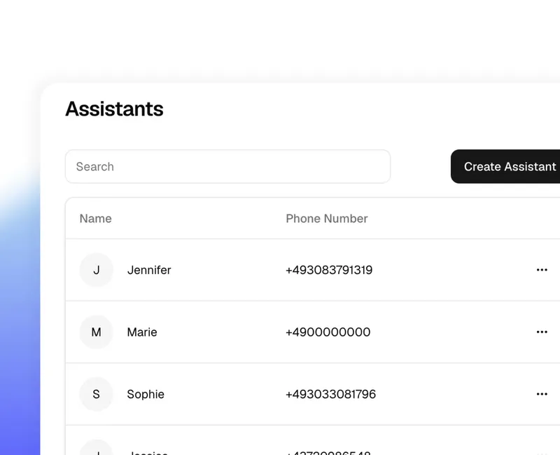
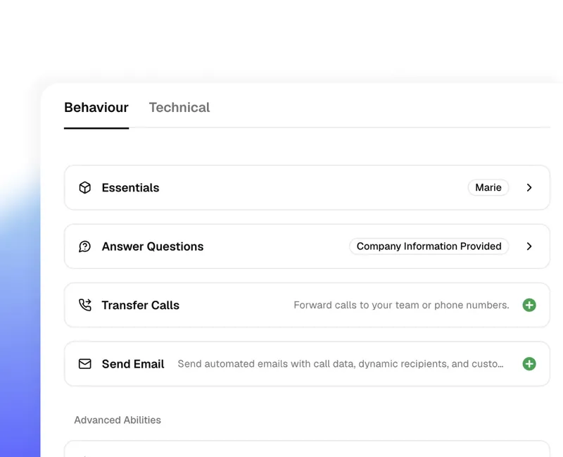
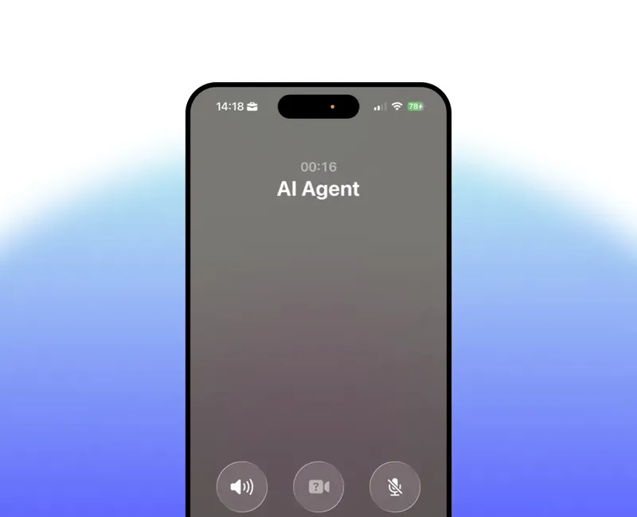

“Our front desk used to miss calls constantly during patient hours. Since switching to fonio, every call is answered 24/7, appointments are booked automatically, and our staff can actually focus on patients in the room.”
Dr. Amanda ReyesFamily Medicine Practice
“I used to lose jobs because I couldn't answer the phone on a job site. fonio handles every inbound call, qualifies the lead, and texts me a summary. I've closed three new clients this month I would have missed.”
Mike DonovanOwner, Plumbing & Drain Services
“My front desk was overwhelmed with booking calls. I set up fonio in less than 20 minutes and now it handles all appointment scheduling while my team focuses on clients. No more voicemails, no more missed bookings.”
Jasmine TorresOwner, Day Spa
“I'm a one-person agency and I can't always pick up. fonio qualifies every caller, captures their details, and books showings directly into my calendar. It's like having a full-time receptionist at a fraction of the cost.”
Brian CallahanIndependent Realtor
Your assistant, ready to test in 30 seconds
Anyone can get fonio up and running—no coding skills required.

01
Create AI phone assistants
Select voice, language, and a welcome message.

02
Define in-call behavior and post-processing
Set up different call handling and choose how you want to receive the transcripts.

03
Let the AI take your phone calls
The AI will be linked to a fonio phone number or your own phone system.
Use cases
Our AI phone assistant adapts flexibly to your needs and seamlessly integrates with systems like calendar tools and CRMs. Automated calls that make sense!
Our AI phone assistant can be integrated into internal systems like CRMs, calendar tools, and databases via native integrations or API interfaces to accurately capture and retrieve data.
Our servers are located in Nuremberg, Germany. Our company headquarters is located in Austria.
Where and how is Fonio developed?
We are one of the few providers of AI phone assistants in Europe that develops its own orchestration layer. This allows us to ensure that all data remains with us. That's what makes fonio special, since most other providers typically white-label U.S. services.
How quickly can I get the phone assistant up and running?
The implementation time depends on the effort required to integrate the system into your existing systems. The AI can be set up in just a few minutes and is ready for use right away.
What if the AI makes mistakes?
Our AI makes decisions based on existing data, which virtually eliminates errors. If the AI is still unable to resolve a situation, it can schedule a callback or transfer the call to a human agent, if desired.
Scalable call management with fonio
Try fonio.ai and see how our AI phone assistant automates your calls to reduce strain on your team – it's simple, efficient, and around the clock.